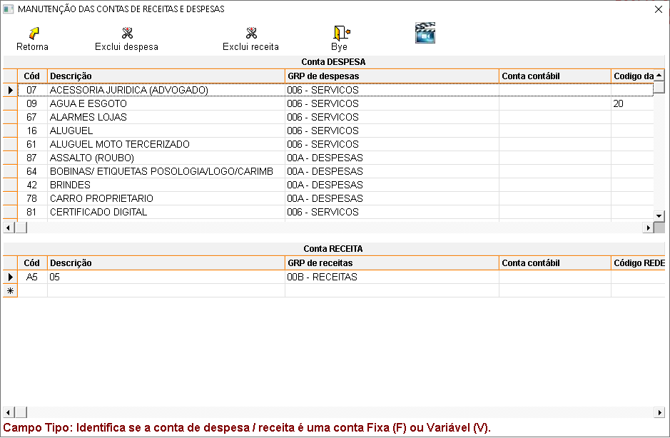

O que é conta?
É o nome técnico que identifica um componente patrimonial (Bem, Direito, Obrigação ou Patrimônio Líquido) ou um componente de resultado (Despesa ou Receita).
Procedimentos para cadastrar contas despesas / receitas:
No Sistema:
- Clique no campo descrição, informe o nome da conta e vincule a um grupo de contas despesas / receitas.
- Tecle ENTER e será salvo automaticamente pelo sistema.
OBS.: As informações sobre cada campo estão no final da página.
Como alterar os dados de uma conta despesa / receita?
Selecione a conta, faça as alterações e tecle ENTER até a próxima linha para salvar.
É possível excluir uma conta de despesa / receita?
Sim, clique em  para excluir uma
despesa ou em
para excluir uma
despesa ou em  para excluir uma
receita, se não estiver vinculada a nenhuma nota fiscal, caso esteja será exibida a seguinte mensagem:
para excluir uma
receita, se não estiver vinculada a nenhuma nota fiscal, caso esteja será exibida a seguinte mensagem:

Tela de cadastro de contas:

Descrição dos campos do cadastro de contas despesas / receitas:
- Cód: Gerado automaticamente pelo sistema.
- Descrição: Nome da despesa / receita a cadastrar.
- Grupo de despesas / receita: Selecione o grupo previamente cadastrado em grupos.